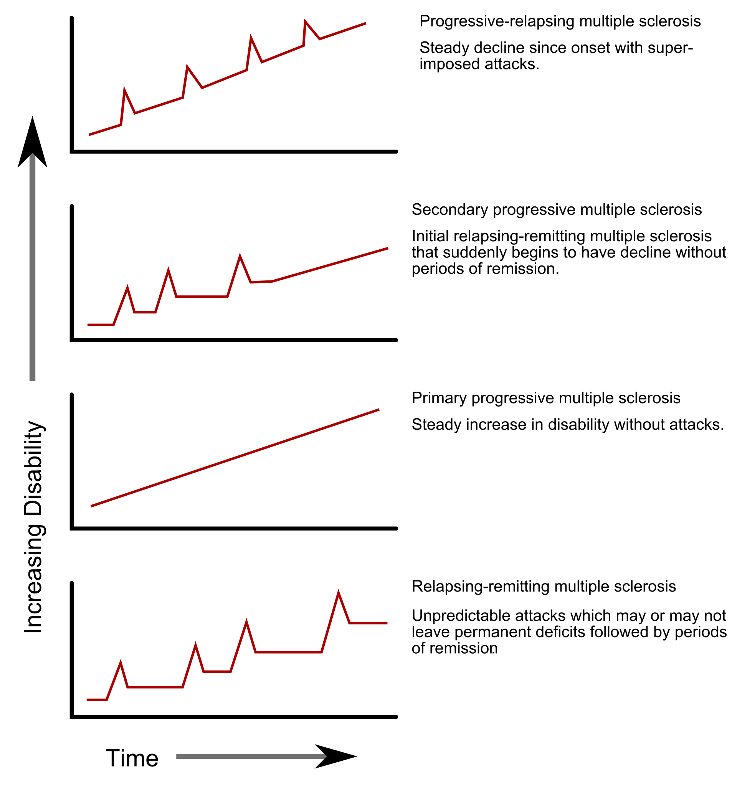

A grande forma é RR; cerca de 15% já começa e não melhora. Na prova de acesso direto, quase sempre cai surto-remissão.
Forma RR (surto-remissão)
A grande apresentação clínica da EM é a forma remitente-recorrente (RR), também chamada surto-remissão: o paciente faz o quadro → melhora → faz de novo → melhora → repete.
~15% progressiva
Cerca de 15% é a forma progressiva (já começa e vai sem melhorar) — menos comum.
Caixa-nuança [084]
“Cerca de 15%” é ordem de grandeza didática coerente com a faixa ~10–15% EMPP (progressiva primária). Não fundir automaticamente com EMSP (secundariamente progressiva), que é outro fenótipo.
O que a prova prefere
Na prova de acesso direto, dificilmente cai a forma progressiva; o padrão de prova é quadro → melhora → quadro → melhora. A definição operacional de surto e remissão será o eixo temporal do McDonald.
Resumo operacional: prova = RR; 15% progressiva existe, mas é o menos cobrado.
~85%Remitente-recorrente (surto-remissão) — o que cai na prova
~15%Progressiva — início sem melhora intercrise

EM — fenótipos de curso (RR, SP, PP, PR). A curva que sobe e desce em degraus é a RR, a dominante.